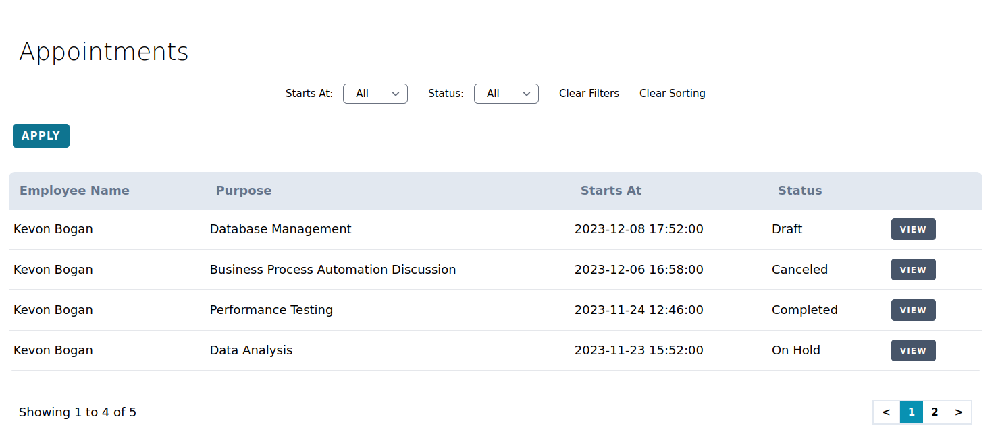
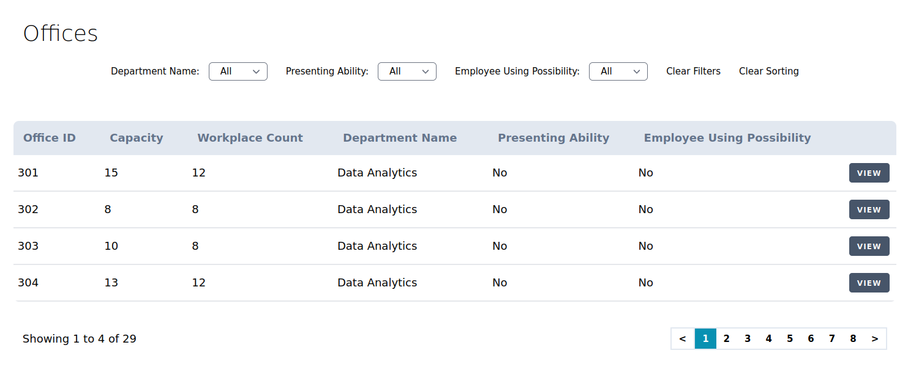
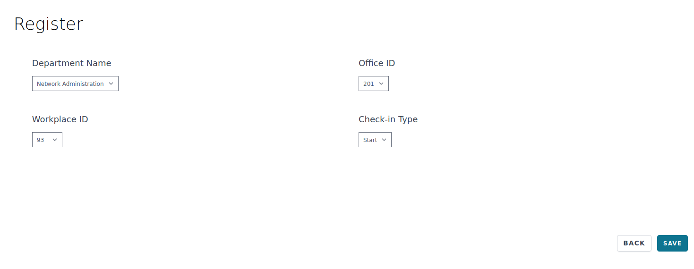
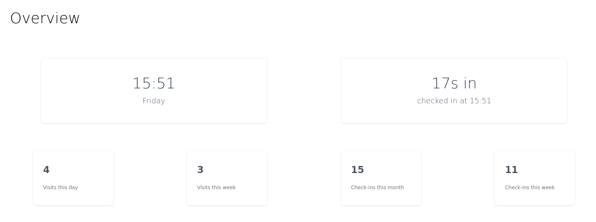

Office flow is a web application that offers intuitive and user-friendly interface for effortless time, space, and appointment tracking.
There are 3 roles: user, employee, and admin. Each have their own actions they can do. All 3 user groups have the same interface meaning there are no 'internal' admin or employee panel.
I will show some examples of functionality available for different user roles.
User can apply and view their appointment list.

User can view office list.

User can view office information.
Employee can view their check ins.

Employee can check in.

Employee can view statistics and current status.
